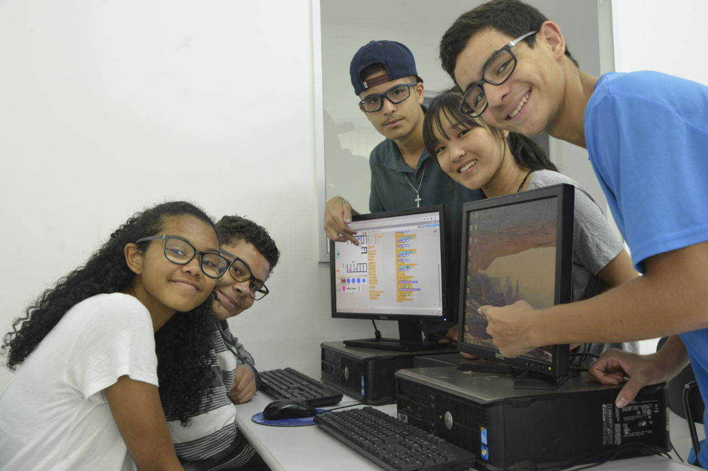

Jovem Aprendiz Digital

Oferecemos cursos de programação e design para jovens de 16 a 20 anos, visando a inserção no mercado de trabalho tecnológico.
Status: Ativo. Pessoas impactadas: 150.
Ver Detalhes do ProjetoConheça as iniciativas que estão transformando nossa comunidade hoje:

Oferecemos cursos de programação e design para jovens de 16 a 20 anos, visando a inserção no mercado de trabalho tecnológico.
Status: Ativo. Pessoas impactadas: 150.
Ver Detalhes do ProjetoDistribuição de livros e criação de bibliotecas comunitárias em áreas carentes...
O voluntariado é a força vital da nossa organização. Encontre a oportunidade ideal para você:
Sua doação garante a continuidade e a expansão dos nossos projetos. Qualquer valor faz a diferença.
Você pode doar via: